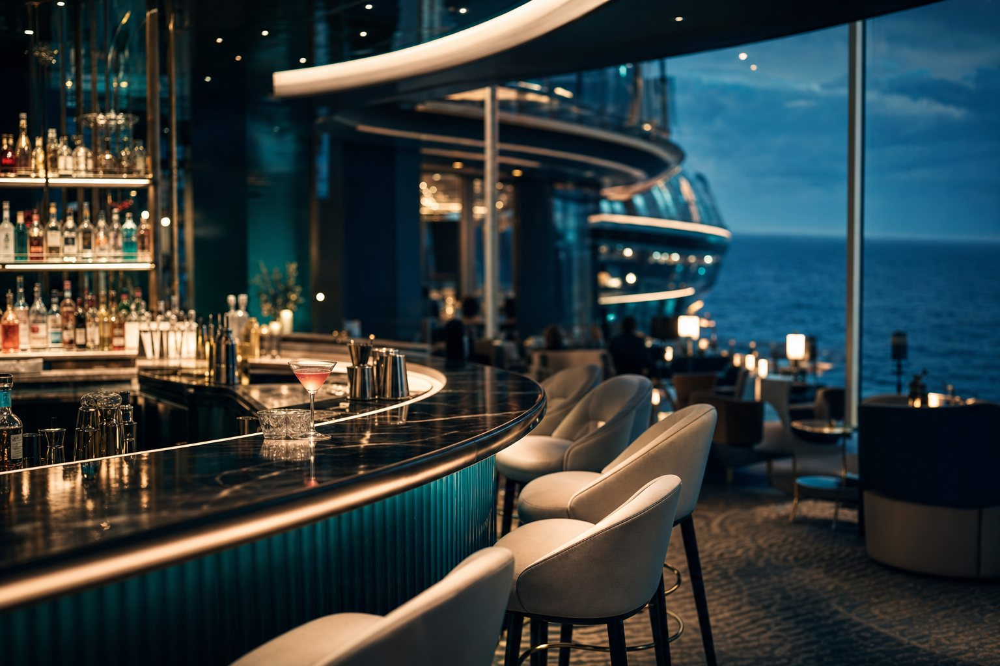
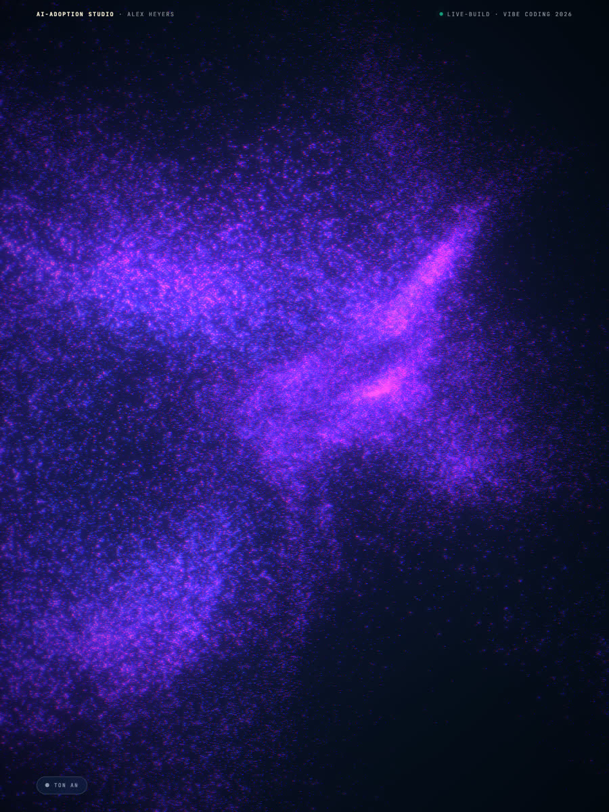
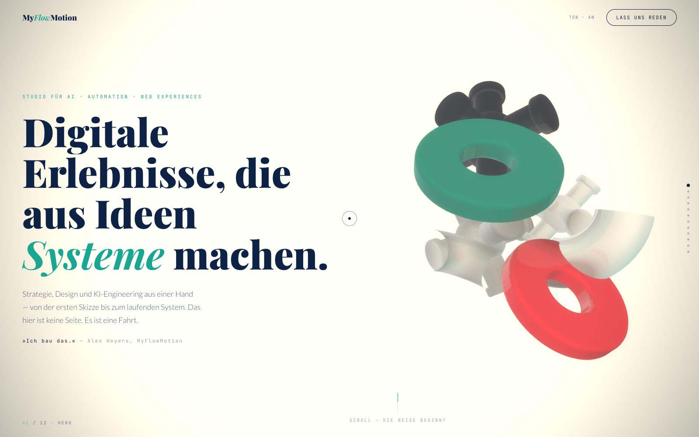
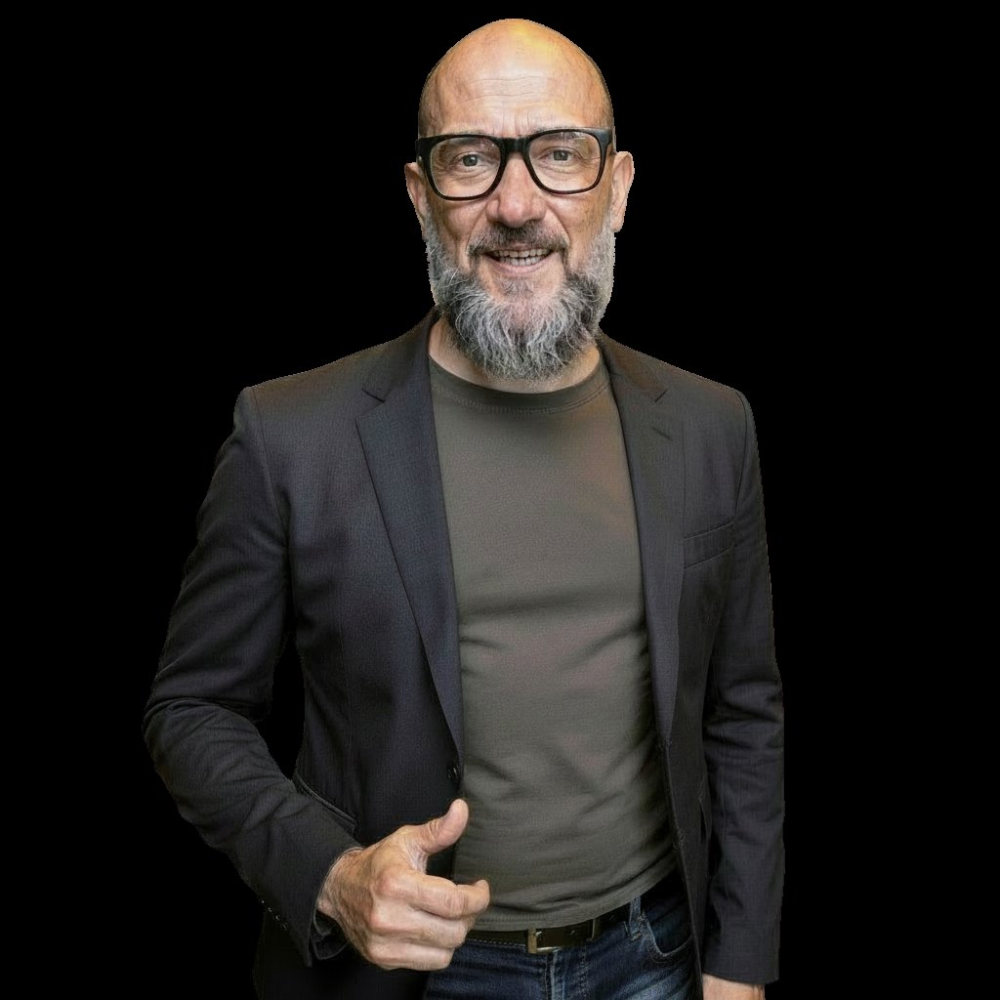

AIDA Cruises
5 Bars · 30 Bartender · 1.300 Gäste/Tag
Barchef auf See, Crew aus 10+ Nationen. Jede Cruise ein kompletter Team-Neustart — Multi-Outlet-Onboarding auf maximaler Schwierigkeitsstufe.
20 Jahre Hospitality-Operations. Seit drei Jahren baue ich mit KI — Workflows, Voice-Agents, ganze Produkte. Verfügbar ab 01.08.2026.
Davor: Grundstudium Neuere und Neueste Geschichte (Universität Karlsruhe, heute KIT) und VWL (Ruprecht-Karls-Universität Heidelberg). Analytisch denken kam vor dem Tresen.

Barchef auf See, Crew aus 10+ Nationen. Jede Cruise ein kompletter Team-Neustart — Multi-Outlet-Onboarding auf maximaler Schwierigkeitsstufe.
Stammgast-Management auf 5-Sterne-Niveau, bevor es CRM-Software dafür gab. Jeder Gast ein Datensatz — im Kopf.
Bar-Manager der Restauranteröffnung. Service als Choreografie — jede Sekunde ein Workflow, lange bevor ich das Wort kannte.
Sechs Mal von null auf Betrieb: Konzept, Team, Prozesse, Eröffnungsnacht. Operations-Denken ist mein Muskelgedächtnis.



Nicht, was ich gleich lerne — was heute live läuft.
Ich weiß, was um 19:30 Uhr im Service wirklich passiert — und wo eine SaaS-Demo am ersten echten Freitagabend zerbricht. Ich übersetze in beide Richtungen.
Klarheit ist der Skill, nicht Syntax. Claude Code im täglichen Build-Einsatz, eigene Custom Skills — ich briefe Modelle so präzise, dass sie für mich bauen.
Eigener VPS, Docker, Pipelines die täglich laufen — E-Mail-Strecken, Daten-Sync, Agenten-Ketten. Ich kenne die Stack-Realität, nicht nur das Slide.
Strukturierte Briefings, dokumentierte Formeln, eigene Skills statt Prompt-Bastelei. Kontext-Design ist der Unterschied zwischen Spielzeug und System.
Verfügbar ab 01.08.2026 · Vollzeit · Remote DACH
